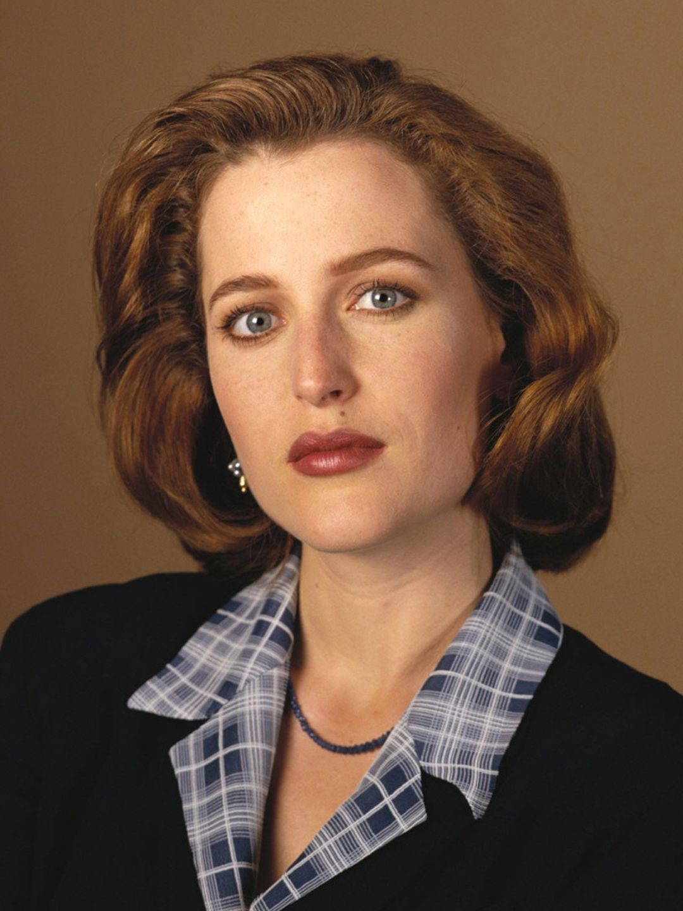
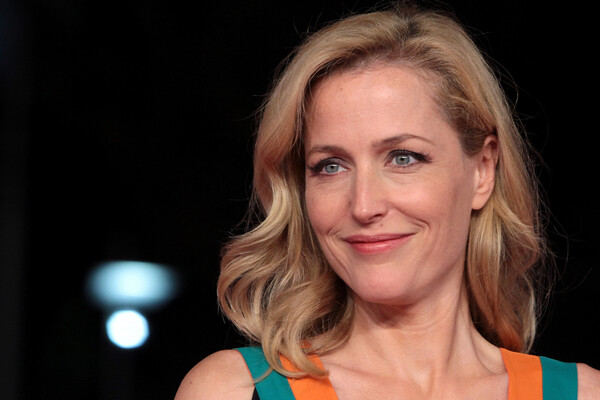
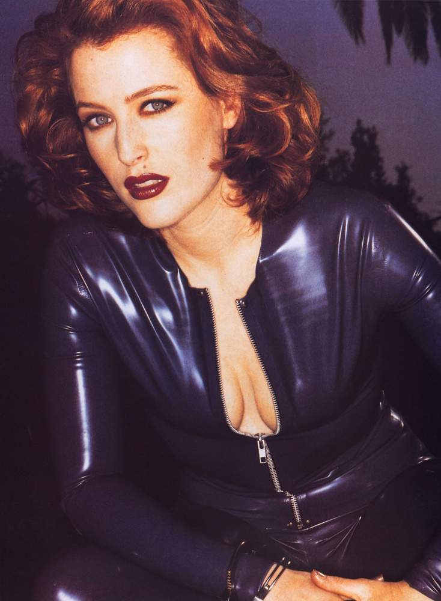

The X files
«Цілком таємно» або «Секретні матеріали» — американський фантастичний телесеріал. Уперше був показаний телеканалом Fox 10 вересня 1993 року й завершився через 9 років — 19 травня 2002 року. З 1993 по 2002 рік було знято 201 епізод. Автор ідеї — Кріс Картер. Серіал з великим успіхом був показаний в різних країнах світу, поміж них і в Україні. На основі серіалу 1998 року був знятий повнометражний фільм «Цілком таємно: Боротьба за майбутнє». 24 липня 2008 року відбулася прем'єра фільму «Цілком таємно: Я хочу вірити».
Where to see
 Серіал англійською.
Серіал англійською.
 Серіал рідненькою.
Серіал рідненькою.
 Серіал солов'їною.
Серіал солов'їною.
All seasons
-

Перший сезон «Цілком таємно» був створений під впливом серіалу «Колчак: Нічний мисливець» сценаристом Крісом Картером. У березні 1993 року розпочався знімальний процес. Зйомки пілотного епізоду тривали 14 днів, його бюджет склав 2 мільйони доларів. Перший сезон знімали у Ванкувері та на його околицях. Цей майданчик використовувався ще п'ять років, і лише з початку шостого сезону знімальна група переїхала в Лос-Анджелес, за проханням виконавця головної ролі Фокса Малдера — Девіда Духовни. Прем'єра пілотного епізоду відбулася 10 вересня 1993 року, він зібрав біля екранів телевізорів 12 мільйонів глядачів. Під час показу рейтинги серіалу невпинно росли, і в підсумку фінальна серія показала рейтинг в 14 мільйонів глядачів.
-

Другий сезон 21 січня 1995 року серіал отримав свій перший «Золотий глобус» в номінації за найкращий драматичний серіал.
-

Третій сезон перевершив рейтинги попередніх двох. Прем'єрний епізод «Благословенний шлях» дебютував з рейтингом в 19.94 мільйони глядачів, що удвічі більше прем'єри попереднього сезону. В середньому рейтинги перевищували 15 мільйонів глядачів, що робить його одним з найпопулярніших серіалів сезону 1995—1996 років на телебаченні США. Сезон отримав позитивні відгуки від телевізійних критиків, вигравши п'ять «Еммі». Декілька епізодів було написано сценаристом Даріном Морганом, до них належать — «Останній відпочинок Клайда Бракмана» та «„Із відкритого космосу "Джо Чанґа"
-

Четвертий сезон. 19 січня 1997 року серіал отримав свій другий «Золотий глобус» в номінації за найкращий драматичний серіал. Також в своїх номінаціях володарями «Золотого глобусу» стали Джілліан Андерсон за найкращу жіночу роль та Девід Духовни за найкращу чоловічу роль в драматичному серіалі відповідно. 14 вересня 1997 року Джілліан Андерсон отримала премію «Еммі» в номінації за найкращу жіночу роль у драматичному серіалі.
-

П'ятий сезон. 18 січня 1998 року серіал отримав свій третій «Золотий глобус» в номінації за найкращий драматичний серіал.
-

Шостий сезон американського фантастичного телесеріалу «Цілком таємно» стартував 8 листопада 1998 року на телеканалі Fox.
-

Сьомий сезон стартував 7 листопада 1999 року.
-

Восьмий сезон стартував 5 листопада 2000 року
-

Дев'ятий сезон «Цілком таємно» стартував 11 листопада 2001 року.
-

Десятий сезон стартував 24 січня 2016 року.
-

Одинадцятий сезон стартував 3 січня 2018 року.
Do you believe in UFO?
Download poster


In the main roles
Dana Katherine Scully
-

- 
- 
- 
-


Дейна Кетрін Скаллі (англ. Dana Katherine Scully) — персонажка фантастичної франшизи навколо телесеріалу «Цілком таємно», втілена Джилліан Андерсон. Спеціальна агентка ФБР, феміністська ікона. В перекладі телеканалу 1+1 ім'я звучить як Дейна, втім у пізнішому перекладі телеканалу СТБ використовувався варіант Дана.
David William Duchovny


{kind=link}
{kind=link}
Фокс Малдер (1-7, 10-11 сезон — головний персонаж; 8-9 сезон — другорядний) — роль виконав Девід Духовни. Малдер — спеціальний агент ФБР, закінчив Оксфордський університет і академію ФБР в Квантіко з відзнакою. Вірить в існування позаземних форм життя і урядової змови, яка існує задля приховання правди. Працює в спеціальному відділі з грифом «X», який характеризується величезною кількістю нерозкритих справ, більшість з яких відбулися за надприродних і таємничих обставин. Дослідження цих справ він зробив головною метою свого життя. Після викрадення прибульцями наприкінці 7 сезону роль Малдера в серіалі зменшилася. Його місце зайняв спеціальний агент Джон Доггетт. Має спільного з Дейною Скаллі сина Вільяма. З'являвся в епізоді серіалу «Самотні стрільці» і в обох фільмах за мотивами серіалу. В 10 сезоні Малдер знову повертається працювати в ФБР.